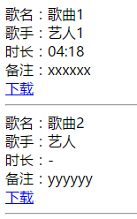

歌名
歌手
00:00/00:00
| 歌名 | 歌手 | 时长 |
|---|
WMPlayer是一款基于HTML5编写的高度可定制的音乐播放器插件，已开源在开源中国码云，欢迎Fork
请移步下载页面下载您所需要的版本
如果您仅仅只是使用而不更深层次的研究代码，建议您下载压缩版本，以下代码用压缩版本做演示。
简单的使用WMPlayer
WMPlayer完整版的HTML结构，可自定义
您需要在页面中引入一个CSS和一个JS文件
请自行修改路径
您需要用一段JavaScript代码来创建一个WMPlayer播放器
| 名称 | 说明 | 默认值 | 是否选填 | 接受类型 | 版本号 |
|---|---|---|---|---|---|
| containerSelector | 包裹WMPlayer播放器的容器，可设置多个 | 无 | 否 | jQuery Selector | 1.3.3及以上 |
| songList | 歌曲播放列表，格式请参考wmplayer-list.js | 无 | 否 | Array | 1.0.0及以上 |
| defaultImg | 专辑图片错误时显示的图片 | 无 | 否 | String | 2.0.0及以上 |
| listFormat | 列表模板，用${变量名}$插入模板变量 |
无 | 否 | String | 2.0.0及以上 |
| autoPlay | 初始化完成后是否自动播放 | true | 是 | Boolean | 1.2.0及以上 |
| playMode | 播放模式（关于播放模式） | 0 | 是 | Int | 1.0.0及以上 |
| playList | 第一首播放的歌曲所属的列表序号 | 0 | 是 | Int | 1.0.0及以上 |
| playSong | 第一首播放的歌曲在列表中的索引（忽略basic） | 0 | 是 | Int | 1.0.0及以上 |
以下配置项已被移除 |
|||||
| lrcTopPos | 当前歌词距离顶部的距离（为了更好的自定义，已于V2.1.0从配置项移除，请用标签属性的方法设置） | 0 | 是 | Int | 2.0.0及以上 |
| playRotate | 播放时专辑图片是否旋转（已于V2.0.0移除） | true | 是 | Boolean | 仅1.3.3 |
| useDefaultStyle | 您是否正在使用默认样式（如果您对样式有了大幅度调整或重写了样式，请将此项设置为false，否则您的排版可能会错乱）（已于V2.0.0移除） | true | 是 | Boolean | 仅1.3.3 |
| lrcHeight | 歌词区域的高度（当useDefaultStyle设置为false时本配置项无效）（已于V2.0.0移除） | 160 | 是 | Int | 仅1.3.3 |
| beforePlay | 每首歌播放开始前的回调函数，接受一个参数作为歌曲信息（V2.0.0回调函数不在配置项中绑定，详情） | 无 | 是 | Function | 1.3.3及以上 |
| canPlay | 歌曲缓冲到可以播放时的回调函数（用户跳跃播放时间时同样会触发），接受一个参数作为歌曲信息（已于V2.0.0移除） | 无 | 是 | Function | 仅1.3.3 |
模板变量可以使您的播放列表更加灵活，使用方法：
假设这是您的播放列表
那么接下来，您可以这么用模板变量
输出结果
0为顺序播放，1为单曲循环，2为随机播放，3为列表循环（默认）
列表循环模式和顺序播放模式有何区别：顺序播放时列表最后一首歌播放完后会暂停，而列表循环会跳转到第一首继续播放。
由于同class标签可能出现多个，为了使不同标签有不同的配置，所以部分参数使用标签属性的方法设置，用法如下：
| 属性名 | 用途 | 所属元素 | 单位 |
|---|---|---|---|
| mw-top | 当前歌词距离顶部的距离 | .wm-lrc | px |
| mw-time | 歌词滚动的时间 | .wm-lrc | ms |
WMPlayer自V2开始采用了通过回调函数绑定事件的方法，代码如下
| 函数名 | 触发时间 | 返回值 |
|---|---|---|
| afterInit | 初始化完成 | - |
| beforePlay | 播放前 | 返回fasle可以取消播放 |
| timeUpdate | 时间变化时 | - |
| end | 播放完毕后 | 返回fasle可以取消播放下一首 |
| mute | 静音状态改变时 | - |
| changeMode | 播放模式改变时 | - |
所有回调函数已使用apply改变了this指向，您可以直接在回调函数中使用this代指WMPlayer对象
所有API接口在开发版的JS文件中已经写有详细注释，此处不再列出
制作您自己的WMPlayer
WMPlayer的自定义非常简单，只需添加类名即可，基本无需修改JS代码
您可以根据自己的页面重写HTML代码，并给相应的元素添加对应类名。并且您可以自定义样式，JS不会对元素的样式进行修改。
| 序号 | 说明 | 选择器 | 备注 |
|---|---|---|---|
| 1 | WMPlayer的容器 | 通过JS配置项进行设置 | - |
| 2 | 歌曲图片 | .wm-cover | 自动更新src属性 |
| 3 | 歌曲名 | .wm-name | 自动更新HTML内容 |
| 4 | 歌手名 | .wm-singer | 自动更新HTML内容 |
| 5 | 当前时间 | .wm-time-current | 自动更新HTML内容 |
| 6 | 总时间 | .wm-time-all | 自动更新HTML内容 |
| 7 | 上一首按钮 | .wm-prev | 自动绑定click事件 |
| 8 | 播放/暂停按钮 | .wm-pause | 自动绑定click事件 自动添加class #1 |
| 9 | 下一首 | .wm-next | 自动绑定click事件 |
| 10 | 静音/取消静音按钮 | .wm-vol-img | 自动绑定click事件 自动添加class #2 |
| 11 | 音量调节滑块 | .wm-vol-range | 自动绑定事件 #3 |
| 12 | 当前进度条 | .wm-pro-current | 自动修改width样式 |
| 13 | 总进度条 | .wm-pro | 自动绑定click事件（后续考虑取消） |
| 14 | 歌词 | .wm-lrc | 自动更新scrollTop属性 |
| 15 | 当前歌词 | .wm-lrc-current | 自动切换元素 |
| 16 | 列表名称 | .wm-list-title | 自动更新HTML内容 自动为其li子元素绑定click事件 |
| 17 | 当前显示的列表的标题 | .wm-list-title-current | 自动切换元素 |
| 18 | 当前显示的列表 | .wm-list | 自动更新HTML内容 自动为其子元素绑定click事件 |
| 19 | 当前播放的音乐 | .wm-list-current | 自动切换元素 |
WMPlayer的所有选择器均为类选择器，如果您有多个容器，只需在所有容器中添加同样的类名，WMPlayer会自动更新所有元素
# 注释
1. 暂停时为wm-pause类，应设置播放图片；开始播放后会添加wm-play类，设置暂停图片。请确保wm-play的权重大于wm-pause
2. 同上，静音时会添加wm-mute类
3. 事件名在配置项中设置，并且需要用代码触发此事件（$.fn.trigger），需要一个value参数
注：WMPlayer自定义教程龟速制作中，请耐心等待。
如果WMPlayer对您有帮助，不妨请我喝杯咖啡。
歌名
歌手
00:00/00:00
| 歌名 | 歌手 | 时长 |
|---|